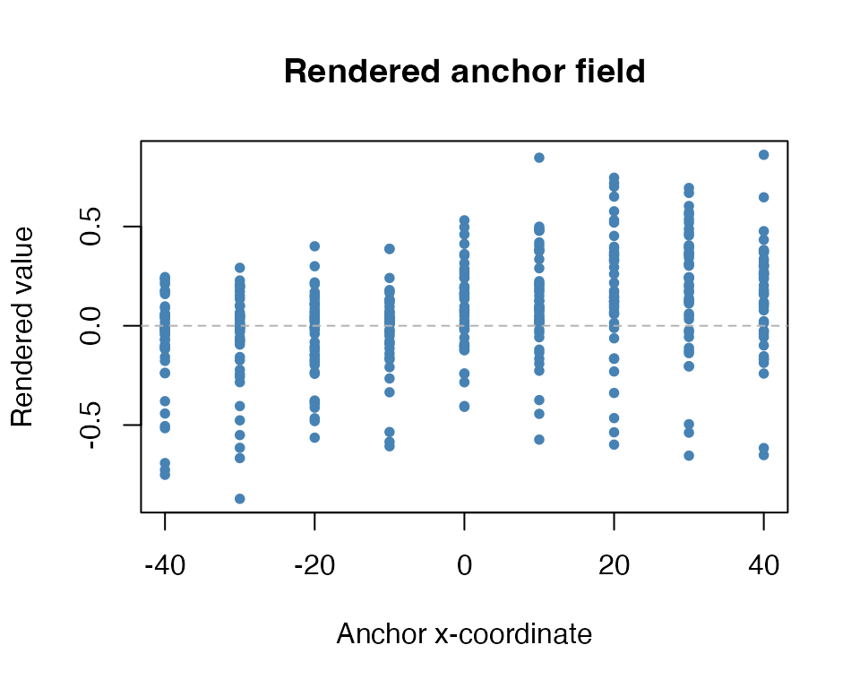
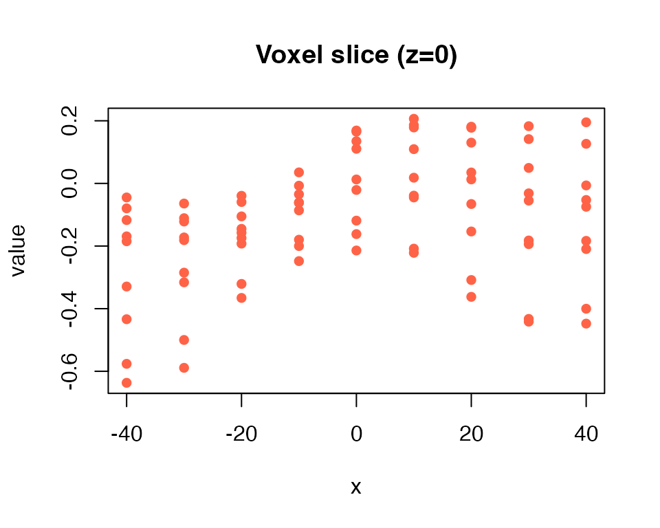

DKGE components and contrasts initially live on each subject’s own clusters. You cannot average those vectors merely because they have similar lengths: cluster indices are not anatomical correspondences. Dense rendering makes the spatial assumption explicit by mapping every subject through shared anchors and, optionally, decoding the anchor field onto a voxel grid.
subject cluster values -> fitted subject-to-anchor maps -> shared anchor field -> voxel interpolationThis page preserves the deprecated geometry-only renderer as a worked
example of rendering mechanics. It is descriptive, cannot produce valid
group inference, and must not be mistaken for functional alignment. For
the typed workflow in which independent response signatures identify
correspondence, read vignette("dkge-functional-alignment")
instead.
What spatial information is required?
The rendering pipeline needs coordinates, so the example below carries both beta coefficients and spatial centroids for each subject.
library(dkge)
S <- 4; q <- 3; P <- 20; T <- 50
betas <- replicate(S, matrix(rnorm(q * P), q, P), simplify = FALSE)
designs <- replicate(S, {
X <- matrix(rnorm(T * q), T, q)
qr.Q(qr(X))
}, simplify = FALSE)
centroids <- replicate(S, matrix(runif(P * 3, -40, 40), P, 3), simplify = FALSE)
subjects <- lapply(seq_len(S), function(s) dkge_subject(betas[[s]], designs[[s]], id = paste0("sub", s)))
bundle <- dkge_data(subjects)
fit <- dkge(bundle, K = diag(q), rank = 2)
fit$centroids <- centroids # attach for transport helpers; pass explicitly in productionLegacy descriptive anchor rendering
dkge_build_renderer() is deprecated. It maps
subject-specific cluster coordinates onto a shared anchor space for
descriptive display, defaults to equal subject weights, and records an
inferentially ineligible receipt. A bare anchor or MNI grid supplies
display coordinates; it supplies no functional correspondence to any
subject. This legacy example uses a deterministic geometric
k-nearest-neighbor mapper; the functional Sinkhorn workflow and its
numerical eligibility gates are covered in
vignette("dkge-functional-alignment").
# use 5k anchors sampled from grey-matter-like cube
vox_xyz <- as.matrix(expand.grid(seq(-40, 40, by = 10), seq(-40, 40, by = 10), seq(-40, 40, by = 20)))
renderer <- suppressWarnings(dkge_build_renderer(
fit,
centroids = centroids,
vox_xyz = vox_xyz,
mapper = dkge_mapper("knn", k = 8, sigx = 3),
graph_k = 10,
decoder_k = 8,
anchor_n = min(500L, nrow(vox_xyz)),
anchor_method = "sample"
))
str(renderer, max.level = 1)
#> List of 11
#> $ anchors : num [1:405, 1:3] -40 -30 -20 -10 0 10 20 30 40 -40 ...
#> ..- attr(*, "dimnames")=List of 2
#> $ graph :List of 4
#> $ decoder :List of 6
#> $ mapper :List of 2
#> ..- attr(*, "class")= chr [1:2] "dkge_mapper_knn" "dkge_mapper"
#> $ mapper_fits :List of 4
#> $ weights : num [1:4] 1 1 1 1
#> $ subject_weighting: chr "equal_subject"
#> $ eligibility :List of 16
#> ..- attr(*, "class")= chr [1:2] "dkge_alignment_eligibility" "list"
#> $ mode : chr "legacy_descriptive"
#> $ anchor_feats : NULL
#> $ mapper_stats :List of 2
#> - attr(*, "class")= chr [1:2] "dkge_legacy_renderer" "list"The renderer carries four components:
-
anchors: the shared coordinates, derived from thevox_xyzgrid, that serve as the common reference space. -
graph: an optional k-nearest-neighbor graph and Laplacian, which enables spatial smoothing across anchors. -
mapper_fits: Subject-specific fitted plans and target-conditional application operators. Reusing the renderer reuses these solved mappings. -
mapper_stats: transport diagnostics - costs, entropies, and support sizes - for assessing the mapping.
Rendering subject values descriptively
dkge_render_subject_values() transports subject cluster
values into the shared anchor space, then interpolates them to the full
voxel grid. It too is deprecated and returns no inferential result.
values_list <- lapply(fit$Btil, function(Bts) as.numeric(Bts[1, ]))
rendered <- suppressWarnings(
dkge_render_subject_values(renderer, values_list, lambda = 0.2, to_vox = TRUE)
)
summary(rendered$details$y)
#> Min. 1st Qu. Median Mean 3rd Qu. Max.
#> -0.8714 -0.0868 0.0546 0.0550 0.2125 0.8612
head(rendered$details$subject_stats)
#> [[1]]
#> NULL
#>
#> [[2]]
#> NULLThe render returns three things:
-
rendered$anchor: the smoothed group field on the anchor coordinates. This is the primary output of the transport. -
rendered$voxel: the interpolated voxel map, with lengthnrow(vox_xyz). -
rendered$details$plan_entropy_mean: mean diffusion of the transport plans. Higher values mean broader anchor coverage and more diffuse mapping patterns.
The anchor values vary along a single spatial dimension, which is the easiest way to see the field’s structure.
plot(renderer$anchors[, 1], rendered$anchor, pch = 20, col = "steelblue",
xlab = "Anchor x-coordinate", ylab = "Rendered value",
main = "Rendered anchor field")
abline(h = 0, col = "grey70", lty = 2)
Voxel Map Snapshot
Slices of the voxel grid show how the anchor-based smooth field is interpolated onto the target space.
sel <- vox_xyz[, 3] == 0 # slice at z = 0
plot(vox_xyz[sel, 1], rendered$voxel[sel], pch = 16, col = "tomato",
xlab = "x", ylab = "value", main = "Voxel slice (z=0)")
What to check before reporting
Three settings change the result:
-
lambdaindkge_render_subject_values()trades fidelity to the original data against spatial smoothness. Watchplan_entropy_meanto judge whether a setting smooths too much or too little. -
subject_featsandanchor_featsindkge_build_renderer()let the descriptive transport use additional latent features. They do not establish fold-safe or independent functional correspondence. - Reuse a renderer for repeated maps: its fitted plans avoid solving
the same subject-to-anchor mappings again. Separately, DKGE keeps a
process-local cache of converged Sinkhorn duals for byte-identical fit
problems; inspect
mapper_fits[[s]]$stats$diagnostics$cache_hitwhen diagnosing a repeated fit.
Where to go next
-
vignette("dkge-anchors")builds the shared anchor representation this page renders onto, when items rather than coordinates define the alignment. -
vignette("dkge-performance")compares the mappers and shows when warm starts and caching pay for themselves. -
vignette("dkge-weighting")covers the transport weighting layer, which changes what a rendered field means. -
vignette("dkge-functional-alignment")is the supported typed workflow for functional correspondence, aligned subject rows, group inference, and rendering on one identified reference support.